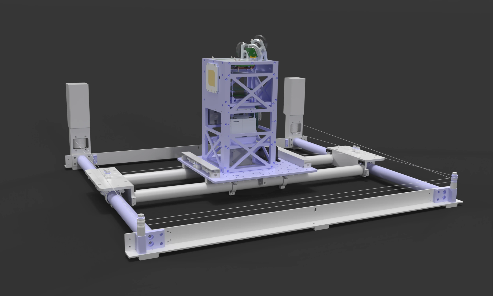

PROPULSION / INDUSTRY
Propulsion engineering across industry
HURACAN, Orbex Prime and Hall-effect thruster work across design, analysis and test.
MECHANICAL DESIGN ENGINEER · PROPULSION & SPACE SYSTEMS
I am a mechanical design engineer working across propulsion, spacecraft and complex mechanisms. My work spans concept design, structural and thermal verification, manufacturing definition, integration and test.

A SELECTION OF MY WORK
PROPULSION / INDUSTRY
HURACAN, Orbex Prime and Hall-effect thruster work across design, analysis and test.

SPACE HARDWARE / ESA
Design, analysis, integration and qualification for VTC1.5 and COLIBRIS.

FLIGHT HARDWARE / ESA
Mechanical design and test contributions to YPSAT and AstroBit.

INDUSTRIAL DESIGN / R&D
Measured results across accumulator, hopper and extrusion equipment projects.